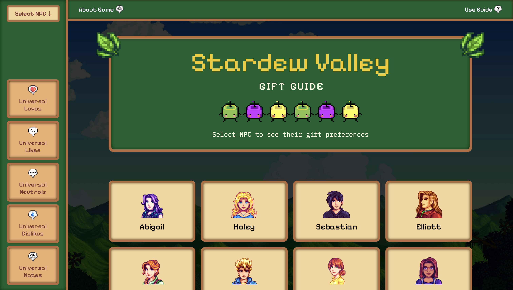
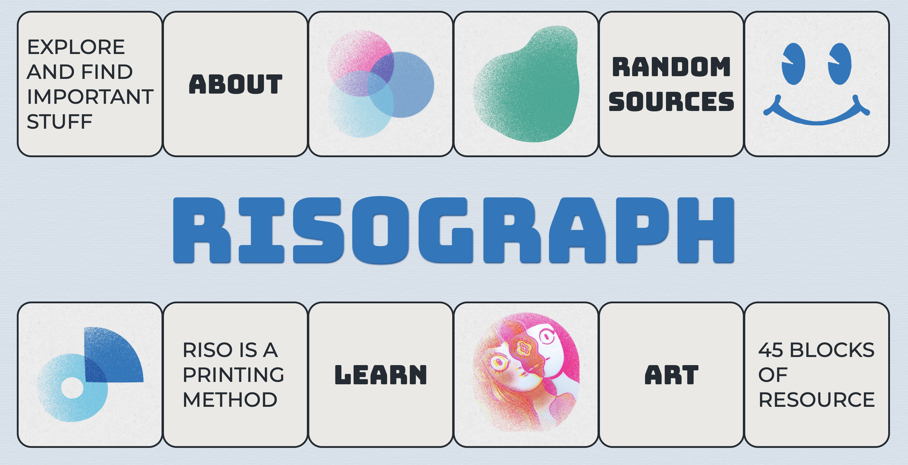
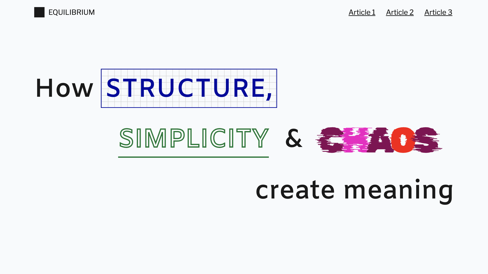
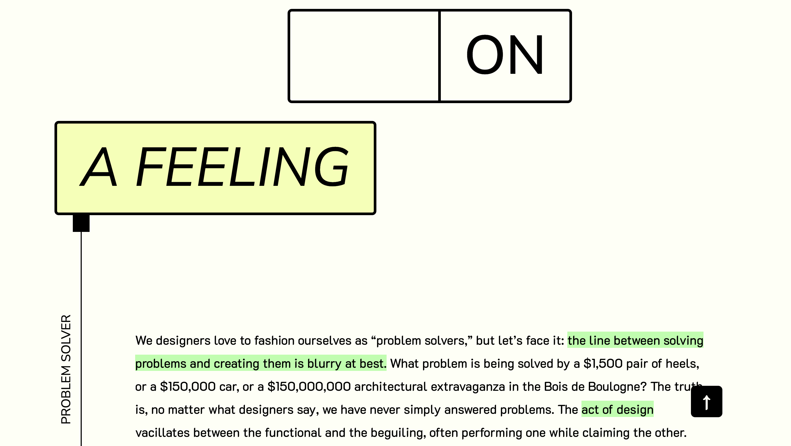
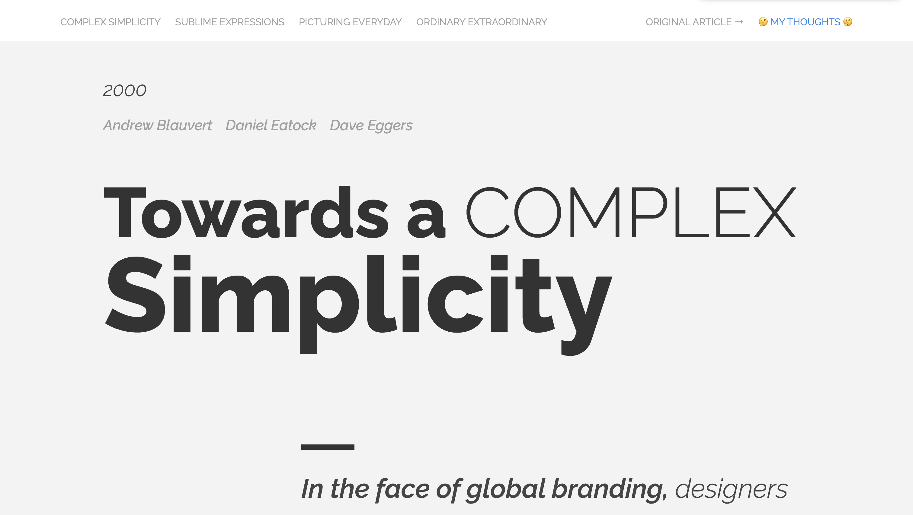

-

Stardew Valley Gift Guide
A guide to help players find the right gift for every NPC in Stardew Valley
html css js
-

Risograph | Links
Website to preserve and share knowledge about Risograph printing
html css js
-

Equilibrium | Binding
Presenting the balance between structure, simplicity, and chaos.
html css
-

Spread
A responsive website evoking emotion through mood-inspired interactivity.
html css
-

Manuscript
A typography-focused website emphasizing readability and navigation.
html css